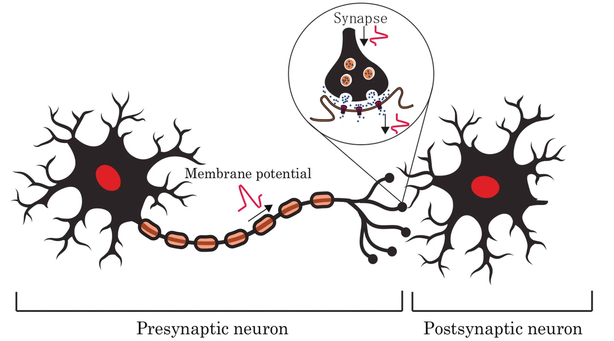
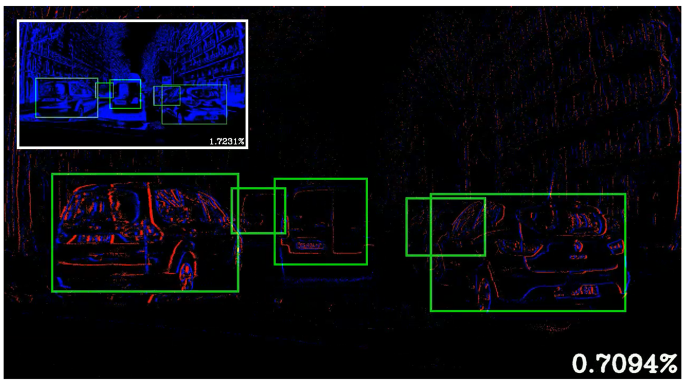
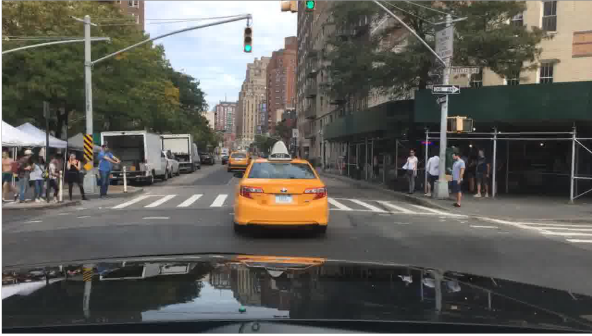
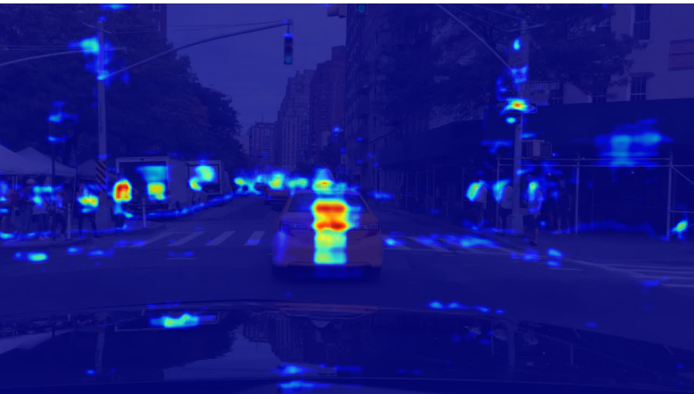
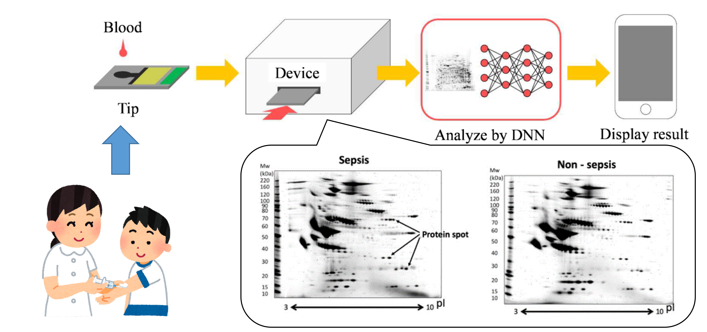
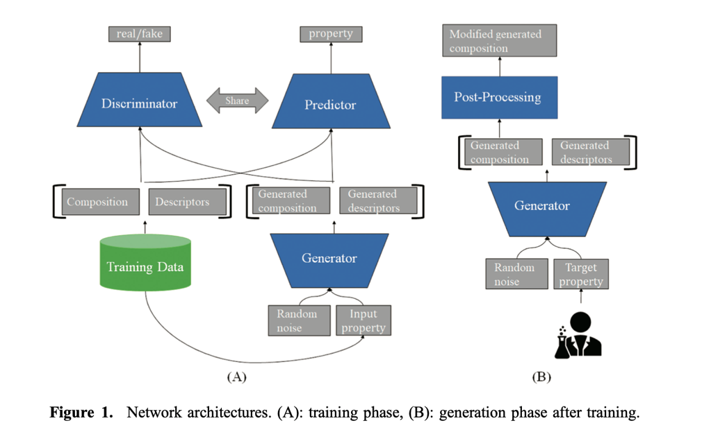
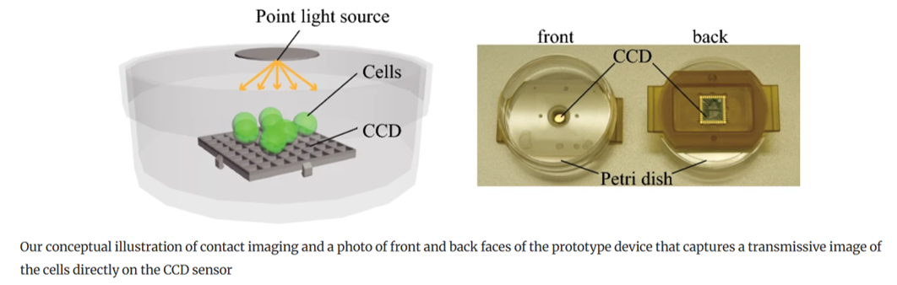
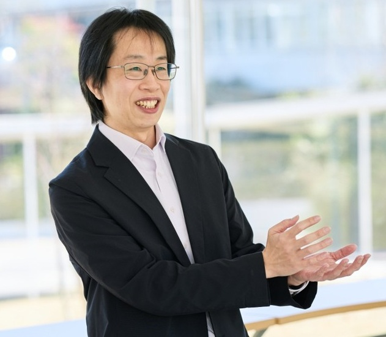

01 / Sustainability
持続可能AI
人の脳のように省電力で動作するAI、スパイキングニューラルネットを研究しています。 例えば、人と同じような効率的な学習方法の実現に興味があります。


Spiking Neural Networks
Neuromorphic Computing
AIの高性能化が進む一方で、AIの課題も顕在化してきています。例えば、 ChatGPTなどの生成AIは大規模な計算資源と電力を必要とします。 また、プロンプトで出力結果の理由を尋ねたとしても、 本当にその理由に基づいて結果を出力したかはわかりません。 このような判断根拠の不明確さはAIの制御困難さに繋がり、 医療分野など、説明責任が必要な分野への適用を困難にします。 本研究室では、これらの既存AIの課題を解決し、人や社会から信頼される次世代AIの実現を目指します。
カーネギーメロン大学の金出武雄先生の言葉です。
素朴で本質的な発想を、専門的な知識と技術で丁寧に形にすることを大切にしています。
澤田の指導教官である名古屋工業大学の本谷秀堅先生の言葉です。
研究ではすぐに成果が見えないこともありますが、考え続け、少しずつ前に進む姿勢を大切にしています。
多くの研究者が注目する課題は競争も激しく、いずれ誰かが解決するかもしれません。 一方で、まだ取り組む人は少なくても、将来重要になる課題も数多くあります。 本研究室では、そのような課題を見つけにいく姿勢を大切にしています。
生成AIはとても便利な道具であり、積極的に活用してよいと考えています。 ただし、その出力をそのまま受け入れるのではなく、なぜその結果になるのか、 本当に正しいのかを理論的・論理的に説明できることを重視します。
人の脳のように省電力で動作するAI、スパイキングニューラルネットを研究しています。 例えば、人と同じような効率的な学習方法の実現に興味があります。


精度を保ちつつ、解釈可能な内部構造を持つAIを研究しています。 例えば、ニューロシンボリックAIとの関連性に興味があります。


信頼されるAIの応用先として、医療分野への適用に興味があります。 現在は、網羅的なタンパク質情報をAIで解析し、疾患検知を行うAIプロテオミクスの研究をしています。

AIを使って新規材料を探索する材料インフォマティクスや、 コンピュテーショナルフォトグラフィの研究にも取り組んできました。 また、ARC-AGI-3のように、現行のAIでは解くのが難しい課題にも興味があります。



共同研究、進学・研究室配属、講演など気軽にお問い合わせください。